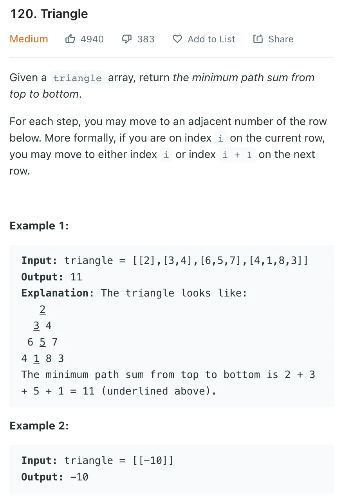
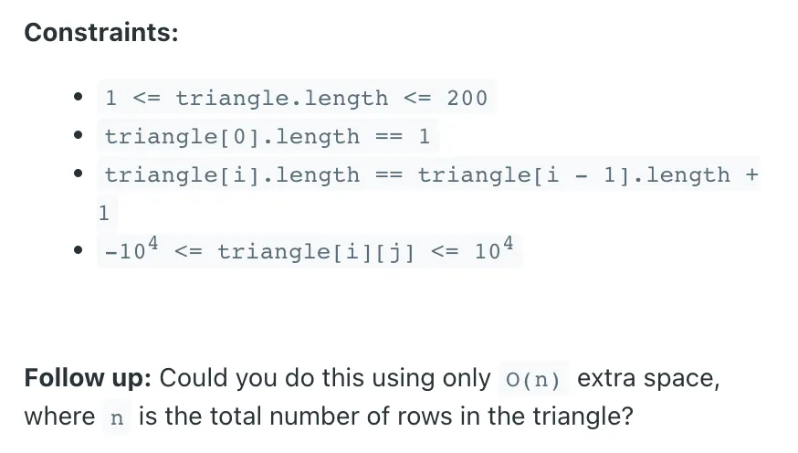

120. Triangle
考過的公司：Amazon
Question


✍🏽 My Solution #1
Runtime: 6 ms, faster than 40.70% of Java online submissions for Triangle. Memory Usage: 44.8 MB, less than 15.64% of Java online submissions for Triangle.
class Solution {
public int minimumTotal(List<List<Integer>> triangle) {
int n = triangle.size();
if (n == 1) return triangle.get(0).get(0);
int[][] dp = new int[n][n];
dp[0][0] = triangle.get(0).get(0);
for (int i = 1; i < n; i++) {
for (int j = 0; j < n; j++) {
if (j > triangle.get(i-1).size()) continue;
if (j == 0) {
dp[i][j] = dp[i-1][j] + triangle.get(i).get(j);
} else if (j == triangle.get(i-1).size()) {
dp[i][j] = dp[i-1][j-1] + triangle.get(i).get(j);
} else {
dp[i][j] = Math.min(dp[i-1][j-1], dp[i-1][j]) + triangle.get(i).get(j);
}
}
}
int result = Integer.MAX_VALUE;
for (int i = 0; i < n; i++) {
if (dp[n-1][i] < result) result = dp[n-1][i];
}
return result;
}
}
🧠 Thought Process
- What is the time/space complexity of my solution? How do I know?
- time: O(n^2)
- space: O(n^2)
Solution #1 [王爭]
Runtime: 4 ms, faster than 61.66% of Java online submissions for Triangle. Memory Usage: 44.2 MB, less than 37.20% of Java online submissions for Triangle.
class Solution {
public int minimumTotal(List<List<Integer>> triangle) {
int n = triangle.size();
if (n == 1) return triangle.get(0).get(0);
int[][] dp = new int[n][n];
dp[0][0] = triangle.get(0).get(0);
for (int i = 1; i < n; i++) {
dp[i][0] = dp[i-1][0] + triangle.get(i).get(0);
for (int j = 1; j < i; j++) {
dp[i][j] = Math.min(dp[i-1][j-1], dp[i-1][j]) + triangle.get(i).get(j);
}
dp[i][i] = dp[i-1][i-1] + triangle.get(i).get(i);
}
int result = Integer.MAX_VALUE;
for (int i = 0; i < n; i++) {
if (dp[n-1][i] < result) result = dp[n-1][i];
}
return result;
}
}
Explanation (in my words)
- How does their solution work?
- 跟我的解法很像，但是剪枝比較多